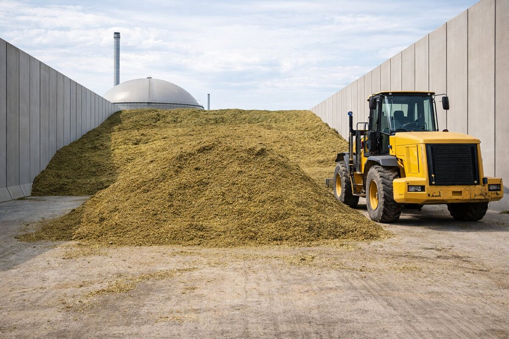
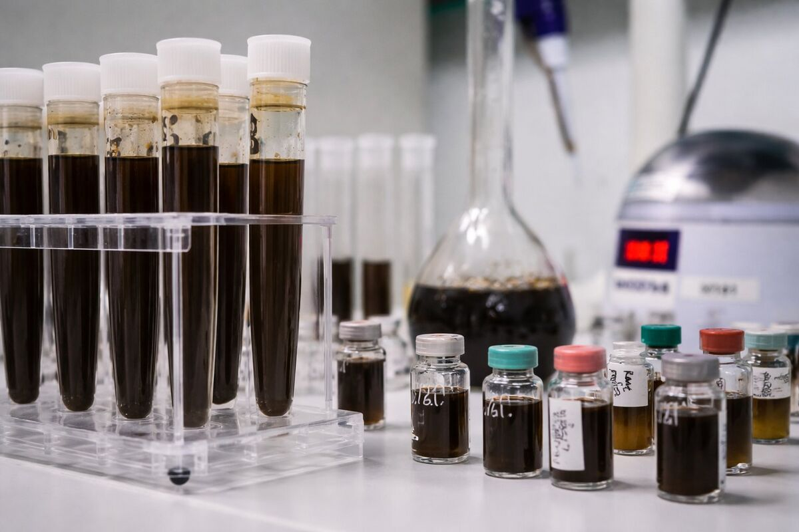

Il digestore non produce tonnellate: produce metano. Per questo valutiamo ogni biomassa sul costo per metro cubo di metano, non sul prezzo a tonnellata.
Analizzando ricetta e approvvigionamento degli impianti, individuiamo tra 150.000 e 500.000 € l'anno di minor costo delle biomasse per impianto.
Molti impianti comprano le biomasse a tonnellata. Una matrice che sembra economica può però rendere pochissimo: in un impianto che abbiamo gestito, a parità di prezzo, il metano prodotto da alcune matrici costava fino a dieci volte di più. Una ricetta sbilanciata rallenta anche la biologia, fa calare la produzione e aumenta il digestato da gestire.

Seguiamo l'intera filiera delle biomasse dell'impianto, dalla scelta delle matrici al controllo di ciò che arriva in piazzale.
Oggi seguiamo in feedstock management 9 impianti: 6 operativi e 3 in sviluppo. In un impianto biogas che abbiamo gestito, la nuova ricetta ha ridotto il costo delle biomasse da circa 680.000 a circa 360.000 € su base annua, con un costo medio del metano intorno a 0,15 €/Nm³.

È la gestione delle biomasse che alimentano il digestore: scelta delle matrici, contratti di fornitura, qualità in ingresso e ricetta. FAR.E Group la valuta sul costo per metro cubo di metano prodotto, non sul prezzo a tonnellata.
Perché il digestore produce metano, non tonnellate. Una matrice economica a tonnellata può avere una resa bassissima: in un caso che abbiamo gestito, a parità di prezzo, il metano costava fino a dieci volte di più.
Analizzando ricetta e approvvigionamento individuiamo tra 150.000 e 500.000 € l'anno di minor costo delle biomasse per impianto. Nel caso documentato il costo annuo è sceso da circa 680.000 a circa 360.000 €.
Sì. Ogni servizio funziona anche da solo, e di solito si parte proprio da ricetta e contratti di fornitura, dove il risparmio è più rapido da misurare.
Sì. Dei 9 impianti che seguiamo oggi in feedstock management, 3 sono in sviluppo: ricetta e approvvigionamento si impostano prima dell'avvio.
Partiamo da ricetta e contratti di fornitura del tuo impianto per capire dove si può risparmiare.
Analizziamo il tuo impianto